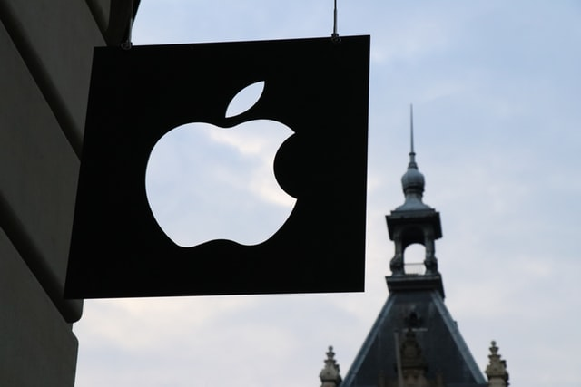

apple'사과'하면 우선 떠오르는 건 the forbidden fruit(금단의 열매)다. 구약성경 창세기(Genesis)에선 금단의 열매가 무엇인지 밝히지 않았지만, 후세인들이 그걸 사과로 단정 짓게 된 데엔 그리스신화에 나오는 Garden of Hesperides(헤스페리데스 정원)의 golden apples(황금 사과)가 미친 영향이 크다는 설이 있다. 창세기 2장 17절은 "You must not eat from the tree of the knowledge of good and evil, for when you eat of it you will surely die(선악을 알게 하는 나무의 실과는 먹지 말라. 네가 먹는 날에는 정녕 죽으리라 하시니라)"라고 말한다. 선후(先後)야 어찌되었건, 라틴어에서 malum이란 단어가 "사과"와 "악(evil)"이라는 두 가지 뜻을 동시에 갖고 있는 게 우연은 아니리라. 아담(Adam)이 금단의 열매를 따먹으면서 마음이 편했을 것 같진 않다. 그래서 열매는 그의 목에 걸려 흔적을 남기는데, 그게 바로 Adam's apple이다. 남성은 사춘기가 되면 larynx(후두)의 갑상연골이 돌출하는데 이를 가리키는 말이다. 후두융기(喉頭隆起)라고 한다. 우리가 보통 목젖이라고 부르는 것이다. 라틴어 의학용어로는 po-mum Adami라고 한다.1) 사과의 유혹적인 가치를 염두에 두고 만들어진 속담도 있다. The apples on the other side of the wall are the sweetest(담 저쪽 사과가 제일 달다=남의 떡이 커 보인다).2) upset one's applecart(계획, 사업 등을 뒤엎다, 망쳐놓다)라는 말이 있다. applecart(=apple cart)는 "사과 행상인의 손수레"다. 고대 로마 시대엔 cart로 쓰였으나, 19세기 말 applecart로 바뀌었다. 손수레 위에 가지런히 쌓아놓은 사과의 모습을 대비시켜 뒤엎는 효과를 극대화하기 위해서였을 것이다. 그 기원이 무엇이건 아담이 에덴(Eden) 동산에서 쫓겨난 이후 사과는 인간의 original sin(원죄)을 뜻하게 되었다는 걸 감안하면 이 표현이 담고 있는 깊은 뉘앙스까지 이해할 수 있겠다. Don't let Barry know about our plans for the ski trip or he'll upset the applecart(스키 여행 계획을 배리에게 말하지 마. 배리가 알면 우리 계획을 망쳐놓을 거야).3) 구약성경 신명기(Deuteronomy) 32장 10절로 가면 사과에 대한 다른 인식이 나타난다. "In a desert land he hound him, in a barren and howling waste. He shielded him and cared for him; he guarded him as the apple of his eye(여호와께서 그를 황무지에서, 짐승의 부르짖는 광야에서 만나시고 호위하시며 보호하시며 자기 눈동자 같이 지키셨도다)." 여기서 유래된 말이 the apple of one's eye(눈동자, 매우 소중한 것이나 사람)다. pupil(눈동자)를 사과로 대체한 표현이다.4) 사과를 싫어하는 사람이 얼마나 될까만서도 특히 미국인은 사과를 매우 좋아한다. 세계 사과 생산량의 35퍼센트를 점하는 중국에 이어 미국은 7.5퍼센트로 2위를 기록하고 있다. 사과로 만든 apple pie(애플파이)는 가장 미국적인 음식으로 여겨져 as American as apple pie(가장 미국적인)라는 말마저 생겨났다. 옛날 미국에선 어린이들이 선생님에게 빤질빤질 윤이 나는 사과를 가져다 드리는 풍습이 있었다. 그런데 세월이 지나면서 좀 다른 의미를 갖게 되었다. apple-polish는 "(아첨을 하여) 남의 환심을 사다, 비위를 맞추다, 알랑거리다(curry favor with)", apple-polisher는 "apple-polish를 하는 사람"이란 뜻을 갖게 된 것이다. in apple-pie order(질서정연하게, 가지런히)라는 말도 있는데. 이 말은 실제로는 apple pie와 아무 관계가 없다. 냅킨 등과 같이 '접은 리넨(folded linen)'이라는 뜻을 가진 프랑스어 nappes plies에서 비롯된 말이다. apple-pie bed는 기숙사 학생들이 장난삼아 발을 못 뻗도록 일부러 시트를 개켜놓은 잠자리를 말한다.5) 사과를 죽도록 사랑한 유명 인사로 스티브 잡스(Steve Jobs, 1955~2011)를 빼놓을 순 없을 것이다. 그가 1976년 4월 1일 스티브 워즈니악(Steve Wozniak)과 함께 창업한 회사 이름부터 Apple Inc.가 아닌가. 왜 회사 이름을 Apple로 했을까? 잡스가 여름에 사과 농장에서 알바로 일하면서 사과야말로 완벽한 과일이라고 생각하게 되었으며, 자신이 숭배했던 비틀스의 회사 이름이 Apple Corps였던 게 주요 이유였다고 한다. 그렇게 알려졌는데, 최근 나온 잡스의 평전엔 잡스가 평소 과일만 먹는 식단을 지키고 있던 데다가 컴퓨터라는 말의 강한 느낌을 누그러뜨려주고 전화번호부에서 아타리(Atari)보다 먼저 나올 수 있다는 게 이유였다고 돼 있다.6) 하여튼 사과를 엄청 좋아했다고 이해하면 되겠다. [네이버 지식백과] apple (교양영어사전1, 2012. 10. 22., 강준만)